National Faculty Expertise System
Faculty
Email id of the user is the log in username for this application.
Figure 1: All users - Log In
Multi language display is being supported. Currently, the user has the choice between 2 regional languages – Hindi & Malayalam. It is planned to have all pages displayed in the selected language in the near future.
On clicking Forgot Password? link beside the Login button, the following page opens up:
Figure 2: All users - Forgot password
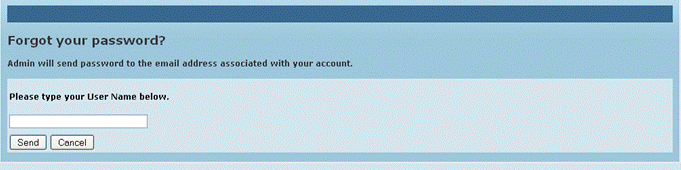
The account details including a system generated password are sent by NFES to the e-mail id entered in this screen. Thus user can log in using this password and may change it using the Change password option.
Change Password
After logging in, the user may change own password at any time. By clicking on icon  in the top right corner of the page (in all pages) the folowing page is opened. New password can be set here.
in the top right corner of the page (in all pages) the folowing page is opened. New password can be set here.
Figure 3: All users - Change password
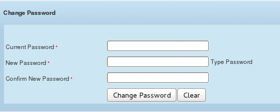
System administrator first registers the faculty member. There after, the faculty member can add details to create profiles for themselves.
When the administrator approves of the saved data, the particular details are officially accepted in the repository and will figure in search results, statistics and reports.
Following are the sections which complete the faculty profile:
Fig 4 below is the home page on logging into the application. The page captures the official contact details, the basic qualifications and focus areas and expertise of the faculty.
Figure 4: Faculty – Profile
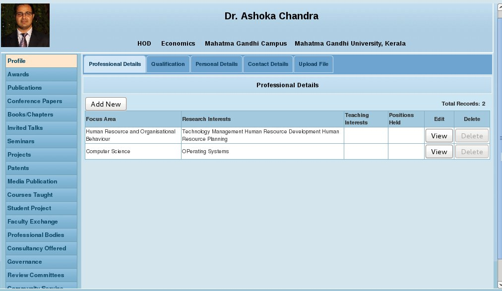
All the buttons on the left panel, on clicking, open the corresponding pages to save details of the user. As can be seen, the button label corresponding to the open page at any time is in a different font color.
Please note that the user can log out from any of the screens, by clicking on the Log out button on the top right corner of every page in the application.
By clicking Add New button placed above the Focus Area section, the user can open a new pop up window (Fig 5) where a new focus area and its details can be captured. In this manner, information on multiple expertise areas can be saved as different line items.
Figure 5: Personal details
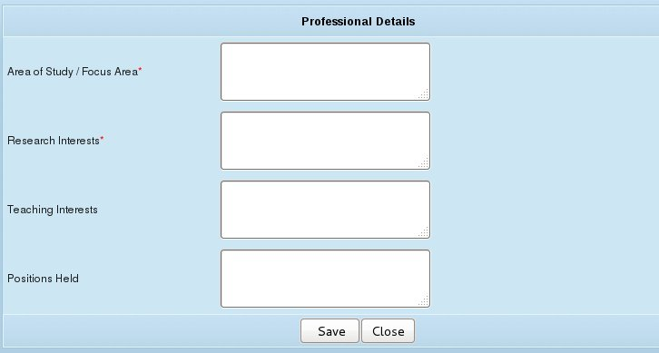
In Profile section, the second tab is Qualification.
By clicking Qualification tab in the top row, the user can open a new pop up window (Fig 6) where qualifications and their details can be captured. In this manner, information on multiple qualifications/titles can be saved and displayed as different line items.
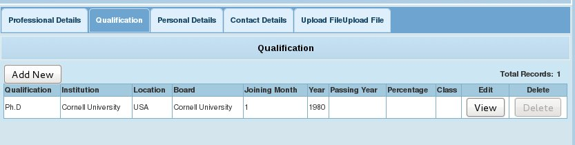
Figure 6: Qualification Details
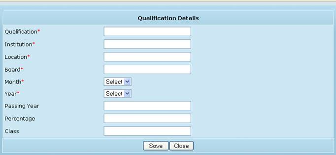
In Profile section, the third tab is Personal Details.
By clicking Personal Details tab in the top row, the following page (Fig 7) is opened where demographic details can be captured.
Figure 7: Faculty - Personal Details
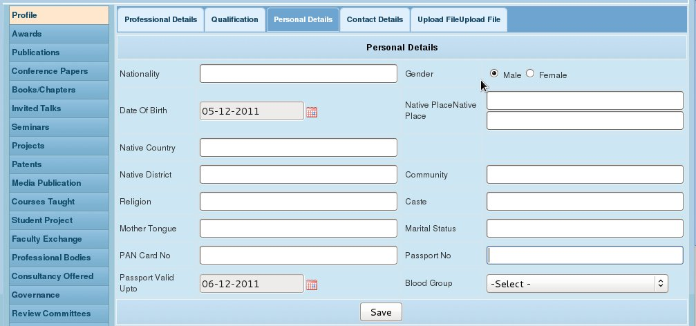
In Profile section, the fourth tab is Contact Details.
By clicking Contact Details tab in the top row, the following page (Fig 8) is opened where address and contact details can be captured.
Figure 8: Faculty - Contact Details
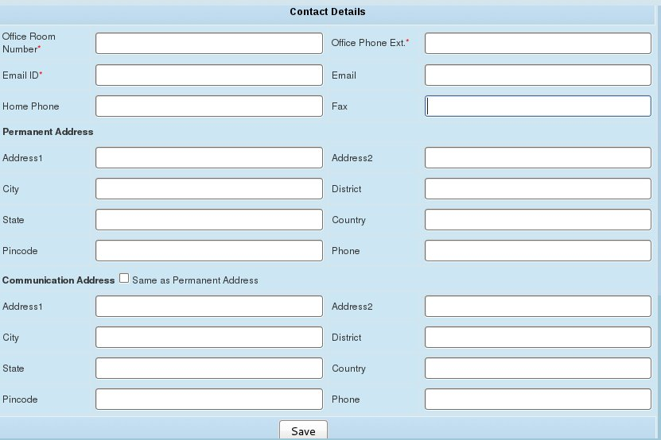
In Profile section, the last tab is File Upload.
The faculty member’s resume and photo can be browsed for and uploaded in this page.
Figure 9: Faculty - File Upload
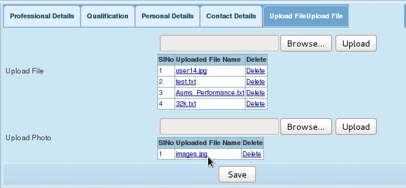
As the name suggests, in this section details of all the awards the faculty may have received during the course of his tenure can be captured.
Figure 10: Faculty - Awards
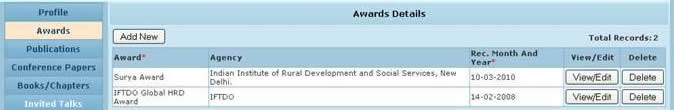
By clicking Add New button placed above the Award field, the user can open a new pop up window (Fig 8) where each award and its details can be captured. In this manner, information on multiple awards can be saved and displayed as different line items – Fig 7.
Figure 11: Award Details
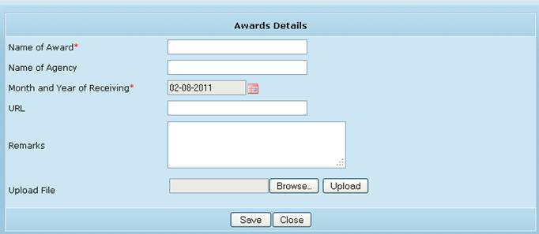
Please ensure to click “Save” in each of the main tabs for saving the multiple records added in that tab.
As the name suggests, in this section details of all the journal papers the faculty has been associated with during the course of his tenure can be captured.
But first, NFES is also gives provision to save the links to external sites' pages where the papers maybe displayed.
Figure 12a: Faculty - links to published paper details in external sites
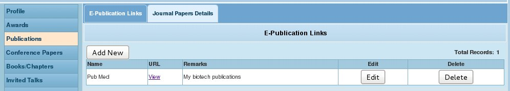
In the page 'Journal Paper Details" ,full details of publications can be captured and saved.
Figure 12b: Faculty - Journal paper details
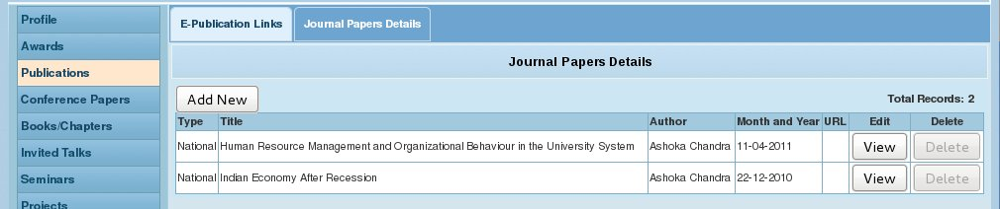
By clicking Add New button placed above the Journal Type field in Fig 9 above, the user can open a new pop up window (Fig 10) where a new journal paper and its details can be captured. In this manner, information on multiple journal papers can be saved and displayed as different line items
Figure 13: Publications Details
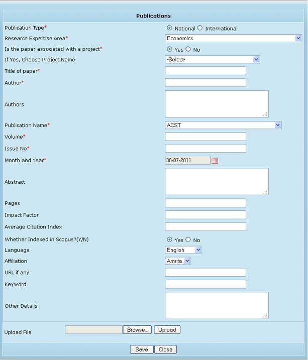
In this section details of all the conference papers the faculty has presented during the course of his tenure can be captured.
Figure 14: Faculty - Conference papers
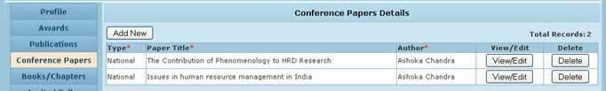
By clicking Add New button placed above the Type field in Fig 11 above, the user can open a new pop up window (Fig 12) where a new conference paper and its details can be captured. In this manner, information on multiple conference papers can be saved and displayed as different line items.
Figure 15: Conference paper details
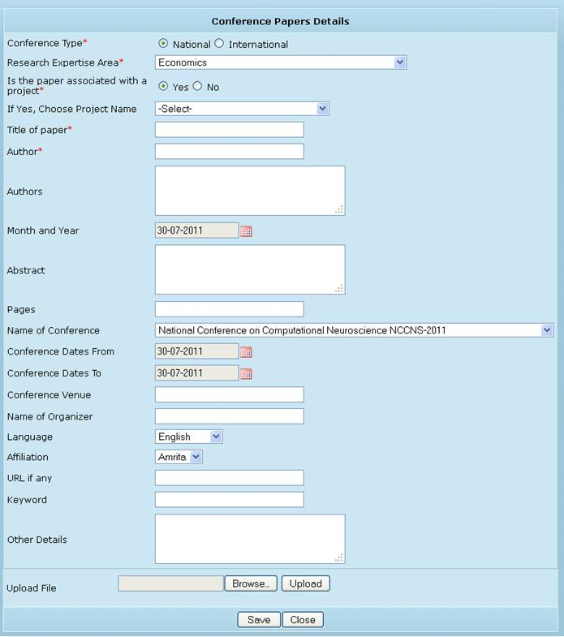
In this section details of all the books/chapters to which the faculty has contributed during the course of his tenure can be captured.
Figure 16: Faculty – Book/chapter
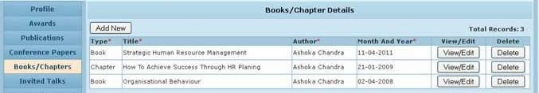
By clicking Add New button placed above the Type field in Fig 13 above, the user can open a new pop up window (Fig 14) where title of a book/chapter and its details can be captured. In this manner, information on multiple such books/chapters authored by the faculty can be saved and displayed as different line items
Figure 17: Book/chapter details
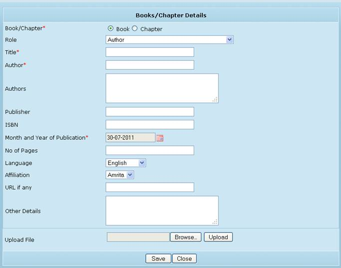
In this section details of all the invited talks/guest lectures given the faculty during the course of his tenure can be captured.
Figure 18: Faculty – invited talks/guest lectures
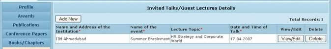
By clicking Add New button placed above the Name and address of the institution field in Fig 15 above, the user can open a new pop up window (Fig 16) where such an event and its details can be captured. In this manner, information on multiple such talks/lectured can be saved and displayed as different line items.
Figure 19: Invited talk /guest lectures details
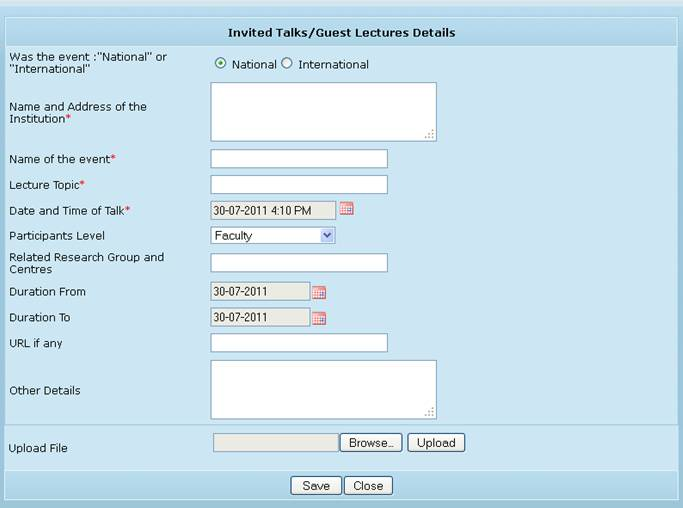
In this section details of all the seminars/conferences/workshops/training conducted/participated by the faculty during the course of his tenure can be captured.
Figure 20: Faculty - seminars/conferences/workshops/training attended
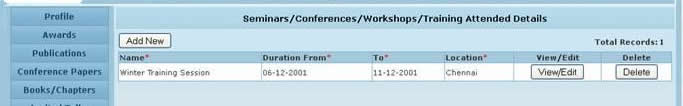
By clicking Add New button placed above the Name field in Fig 17 above, the user can open a new pop up window (Fig 18) where details of each seminar/conference/workshop can be captured. In this manner, information on multiple such events can be saved and displayed as different line items.
Figure 21: Seminars/conferences/workshops/training attended - details
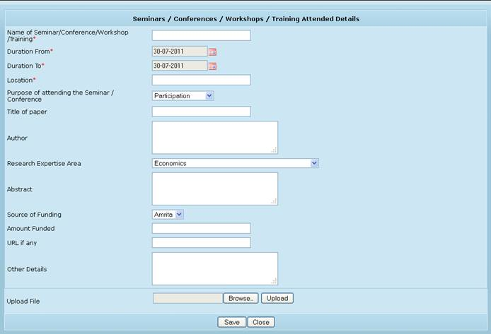
In this section details of all the projects undertaken by the faculty during the course of his tenure can be captured.
Figure 22: Faculty - Projects
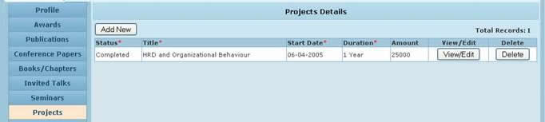
By clicking Add New button placed above the Status field, the user can open a new pop up window (Fig 20) where details of each project can be captured. In this manner, information on multiple projects can be saved and displayed as different line items.
Figure 23: Project details
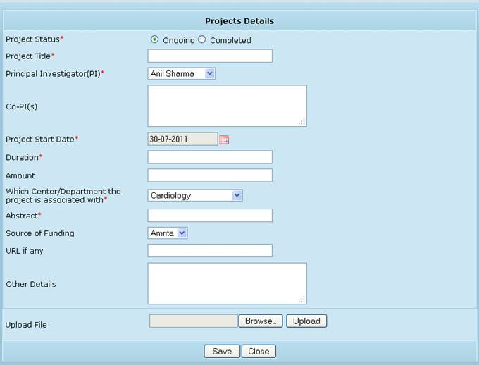
In this section details of all patents the faculty has been credited for can be captured.
Figure 24: Faculty - patents
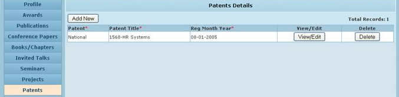
By clicking Add New button placed above the Patent field, the user can open a new pop up window (Fig 22) where each new patent title and its details can be captured. In this manner, information on multiple patents can be saved and displayed as different line items.
Figure 25: Patent details
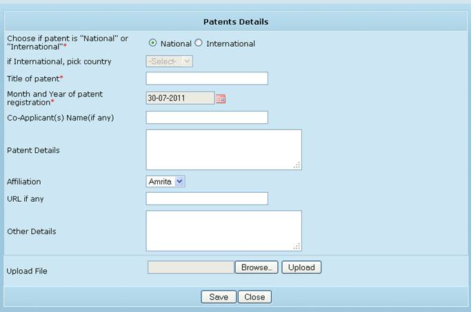
In this section details of all the media publications by the faculty during the course of his tenure can be captured.
Figure 26: Faculty - Media publications
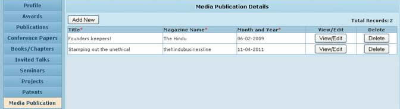
By clicking Add New button placed above the Title page, the user can open a new pop up window (Fig 24) where each new publication and its details can be captured. In this manner, information on multiple media publications can be saved and displayed as different line items
Figure 27: Media publications details
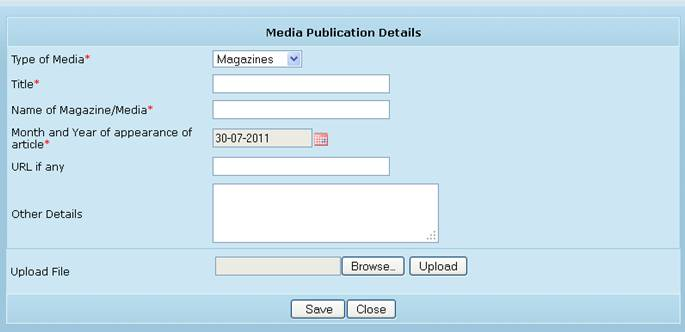
In this section details of all the courses taught by the faculty can be captured. Data is populated here from the “Course Taught” master tables where these details are entered by the system administrator. .
Figure 28: Faculty – courses taught
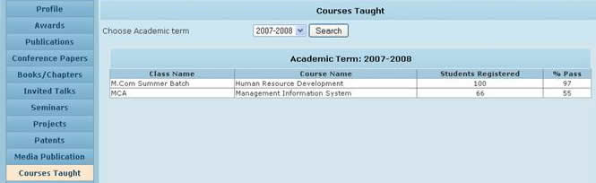
In this section details of all the theses/student projects supervised by the faculty during the course of his tenure can be captured.
Figure 29: Faculty – theses/student projects
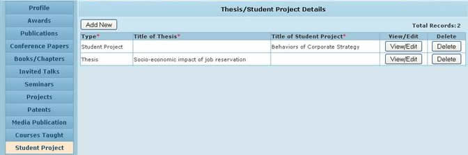
By clicking Add New button placed above the Type field, the user can open a new pop up window (Fig 27) where each new thesis/project details can be captured. In this manner, information on multiple expertise areas can be saved and displayed as different line items
Figure 30: Theses/student project details
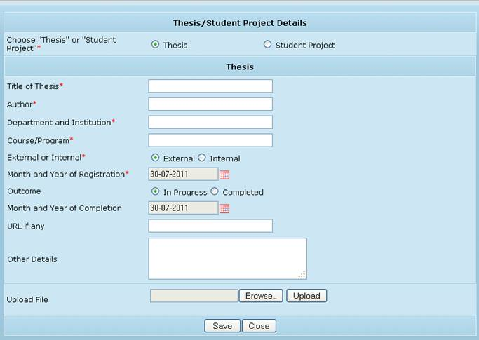
In this section details of all the faculty exchange programs the faculty has participated in, during the course of his tenure can be captured.
Figure 31: Faculty – exchange program
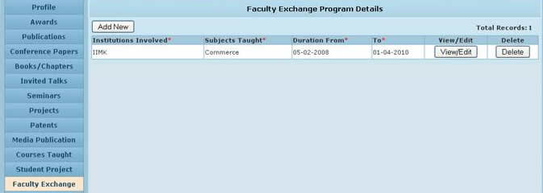
By clicking Add New button placed above the Institution Involved field, the user can open a new pop up window (Fig 29) where each new focus area and its details can be captured. In this manner, information on multiple such programs can be saved and displayed as different line items.
Figure 32: Exchange program details
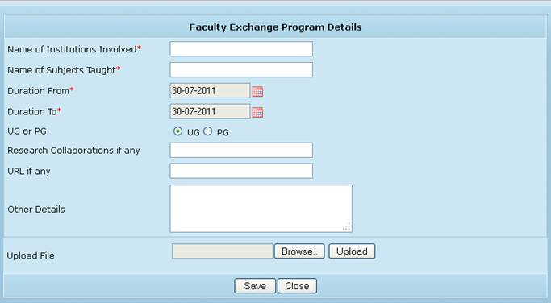
In this section details of all the professional bodies & societies the faculty has been associated with during the course of his tenure can be captured.
Figure 33: Faculty – professional bodies/societies
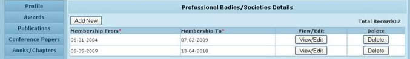
By clicking Add New button placed above the Membership From field, the user can open a new pop up window (Fig 31) where a new professional society name and its details can be captured. In this manner, information on multiple such societies can be saved and displayed as different line items.
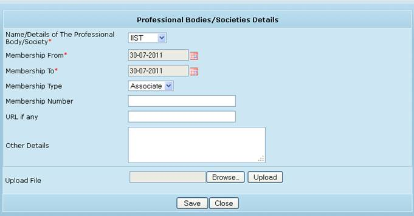
In this section details of the consultancy offered to multiple clients during the course of his tenure can be captured.
Figure 34: Faculty - Consultancy offered
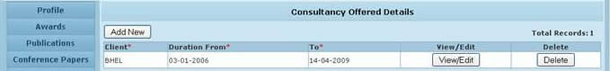
By clicking Add New button placed above the Client field, the user can open a new pop up window (Fig 32) where a new client name and details can be captured. In this manner, information on multiple clients can be saved and displayed as different line items.
Figure 35: Consultancy details
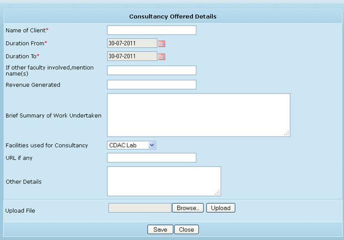
In this section details of all the governance panels the faculty has been part of, during the course of his tenure can be captured.
Figure 36: Faculty - governance
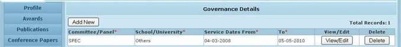
By clicking Add New button placed above the Committee/Panel field, the user can open a new pop up window (Fig 33) where a new focus area and its details can be captured. In this manner, information on governance panels can be saved and displayed as different line items.
Figure 37: Governance details
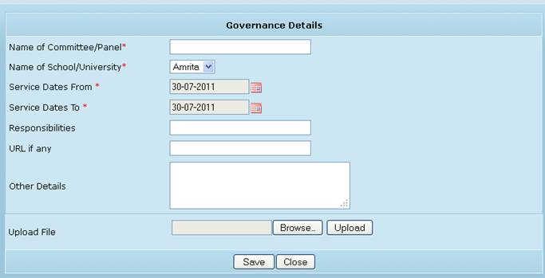
In this section details of all the review committees faculty has been part of during the course of his tenure can be captured.
Figure 38: Faculty – Review Committee
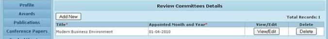
By clicking Add New button placed above the Title field, the user can open a new pop up window (Fig 36) where a new review committee name and its details can be captured. In this manner, information on multiple such committees can be saved and displayed as different line items.
Figure 39: Review committee details
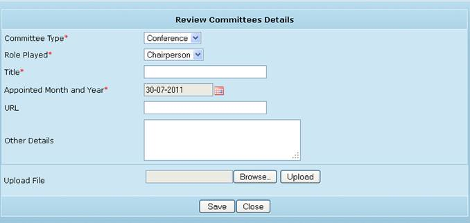
In this section, details of any community service the faculty has been part of, during the course of his tenure can be captured.
Figure 40: Faculty - Community service
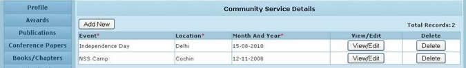
By clicking Add New button placed above the Event field, the user can open a new pop up window (Fig 38) where a new community service event and its details can be captured. In this manner, information on multiple such events can be saved and displayed as different line items
Figure 41: Community Service details
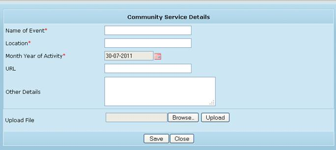
The faculty profile details are now fully captured in the application.
The System Administrator is alerted when such a profile is saved by a faculty in NFES. System Admin has the privilege to view and edit the profile details if required. Once the System Admin approves of the details, the particular faculty’s details are officially accepted as part of the expertise system and no further modification is allowed
Each faculty registered in NFES can use the event scheduler to record details of any events – meetings, appointments etc.
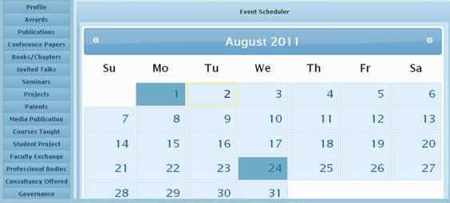
Details captured are – event description, date and start/end times.
Figure 42: Event Scheduler
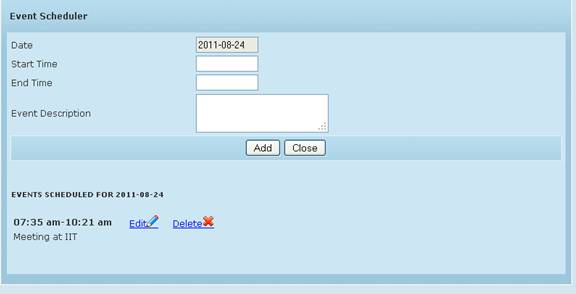